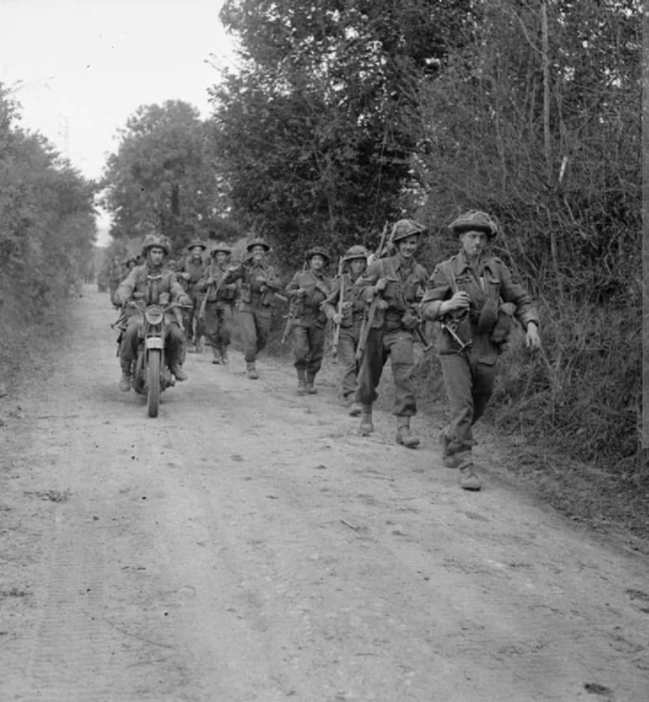
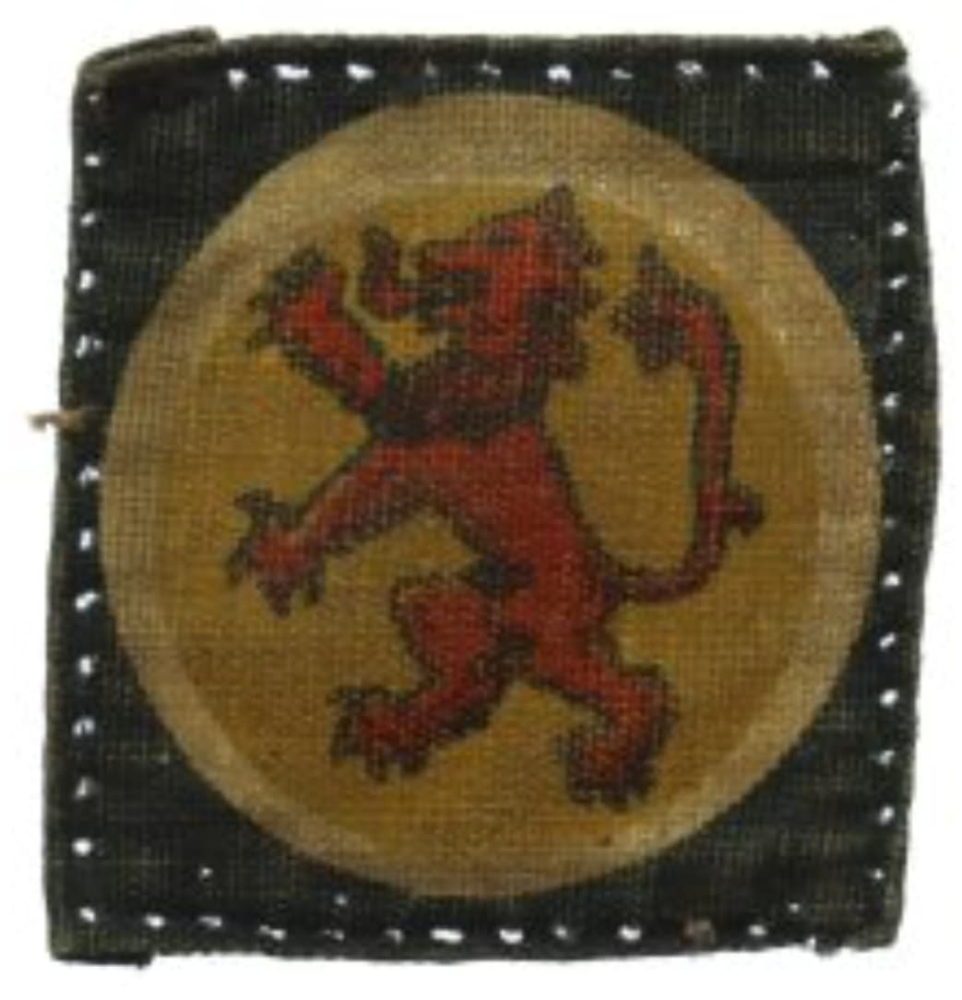
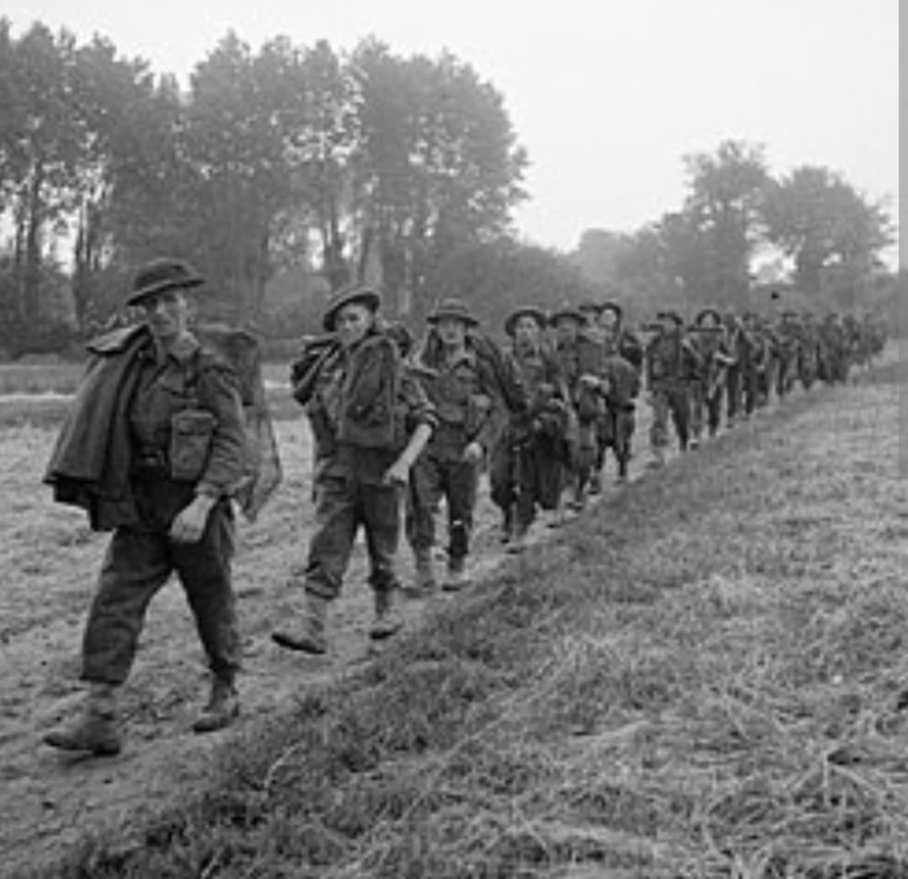

Les redoutables régiments écossais : du corridor de l'Odon en Normandie au franchissement de l'Elbe

La 15th (Scottish) Infantry Division est l'une des divisions d'infanterie les plus illustres de la British Army durant la Seconde Guerre mondiale. Composée de régiments écossais historiques portant fièrement le tartan et accompagnés par les sonneurs de cornemuse au combat, elle s'est taillé une réputation de ténacité absolue dans les plus durs affrontements du front de l'Ouest.
Engagée en Normandie à la fin du mois de juin 1944, la division a été le fer de lance de sanglantes offensives pour contourner Caen et briser le verrou blindé allemand.
Reformée en septembre 1939 comme division de premier rang de la Territorial Army sous les ordres du major général **Gordon MacMillan**, la 15th Scottish regroupe des régiments prestigieux tels que les Royal Scots, les Argyll and Sutherland Highlanders ou encore les Cameronians.
Son insigne d'épaule distinctif se compose du lion rampant rouge écossais sur fond jaune ou noir, symbole d'ardeur et de fierté nationale écossaise au sein des forces britanniques.

Débarquée en Normandie la troisième semaine de juin 1944, la division est immédiatement jetée dans l'Opération Epsom. Sa mission est de percer les lignes ennemies à l'ouest de Caen et d'établir une tête de pont de l'autre côté de la rivière Odon.
Au cours de combats effroyables contre les panzers de la Waffen-SS, dans un secteur surnommé la « vallée de la Mort » ou le « corridor de l'Odon », les soldats écossais s'accrochent au terrain malgré de très lourdes pertes, résistant aux contre-attaques aveugles et fixant les meilleures divisions blindées ennemies.

Après la percée de Normandie, la 15th Scottish participe activement à la poursuite des forces allemandes à travers la France et la Belgique, libérant la ville de Tournai puis s'illustrant lors de la libération des Pays-Bas.
Au printemps 1945, elle est choisie pour être l'une des unités d'assaut majeures lors du franchissement du Rhin (opération Plunder) et pousse jusqu'à l'Elbe, sécurisant la capture de grands centres urbains jusqu'à la capitulation finale en mai 1945.
Page du Musée HOP WW2 – Section Unités & Divisions